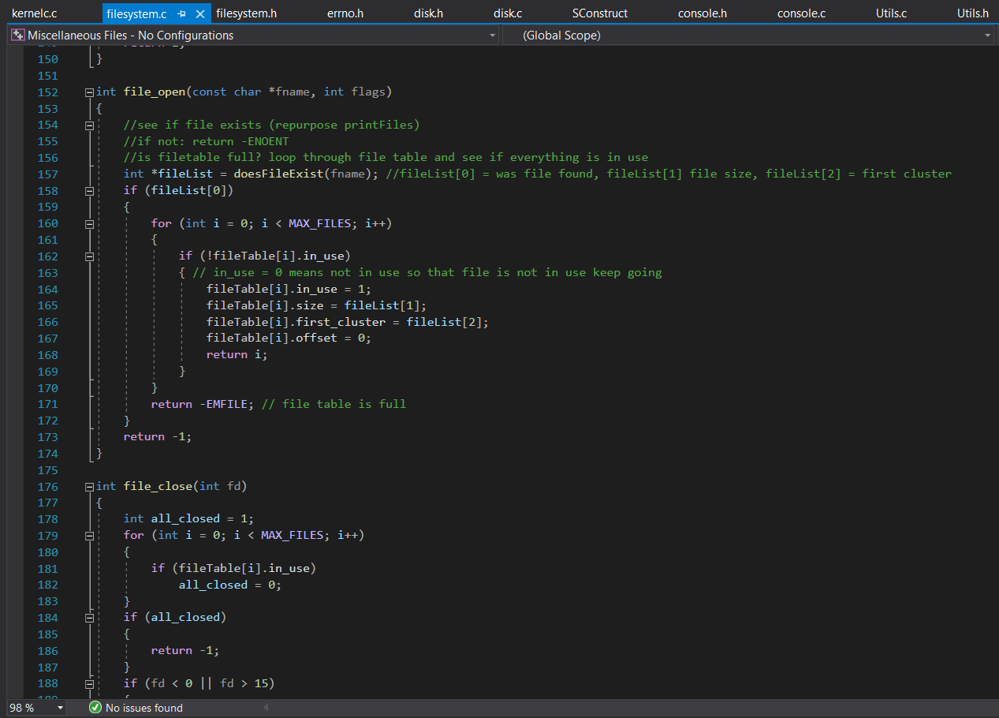
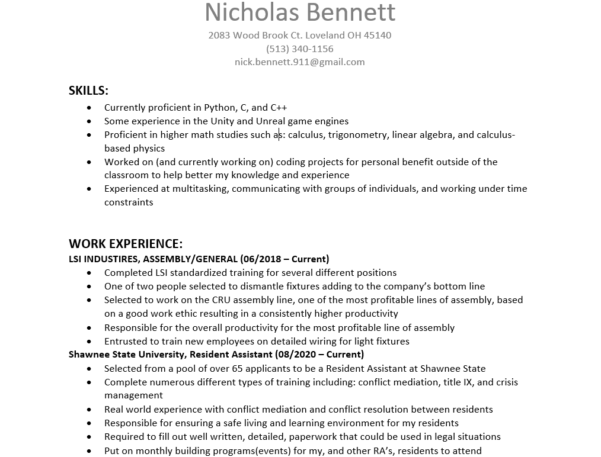

Welcome to my Portfolio! Thank you for
taking the time to look over what I have
to offer. A little bit about me; I'm currently
attending Shawnee State University obtaining
a bachelors in Digital Simulation/Game Engineering
Technologies with a minor in mathematics.
I've always loved the freedom that programming offers and how deeply you
can get lost in the infinite number of possibilities you
could achieve using it; so much so that its almost daunting even. But that
daunting feeling as well as the creative possibilities is what keeps me
always wanting more.
Over time I've accumulated my own repertoire of
projects that show off a handful of my
different skills. All the way back to older
projects focused on specific skills to
more recent work with larger groups
focused on entire backend systems for
games made from scratch.
My resume highlights some of the more noteworthy
self-training projects I've done along with some of
the particular skills I aquired in doing those projects.
If you're looking for a very formal and brief summation
of my skill set and things I've done then this is
the resource you're looking for you.